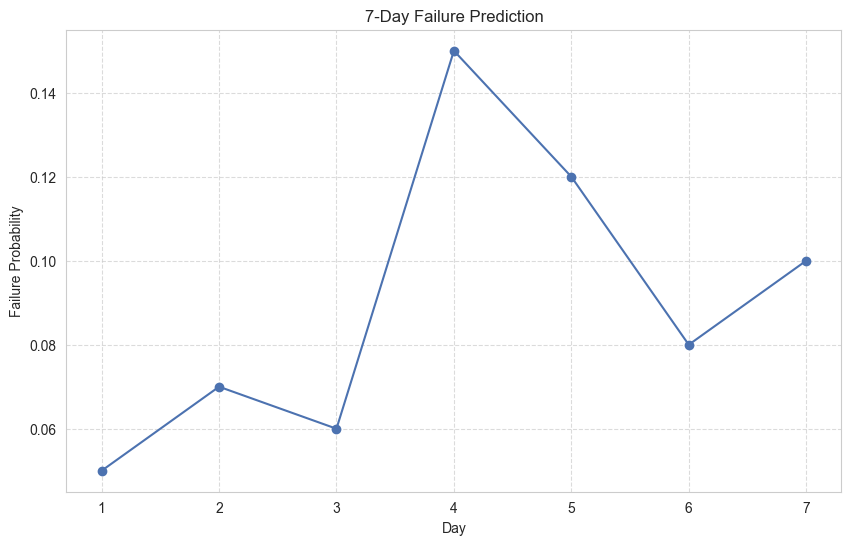

Generated on: 2025-03-31 09:47:12
Grid Resilience Inc.
The grid is currently operating at 95% capacity with most components in operational status. There are 3 components at risk and 1 component in failed status.
Weather conditions pose moderate risk to northeastern sectors due to predicted thunderstorms.
Component vulnerability analysis shows 5% of components with vulnerability scores above 0.7, primarily in the northeastern transmission lines.
| Component Type | High Risk | Medium Risk | Low Risk |
|---|---|---|---|
| Generators | 1 | 2 | 12 |
| Transformers | 0 | 3 | 9 |
| Transmission Lines | 4 | 7 | 32 |
Failure prediction models indicate a 15% probability of at least one component failure in the next 24 hours, concentrated in the northeastern sector due to weather conditions.
Expected load fluctuations due to temperature changes may impact southern generators.
Recommended actions from policy optimization: